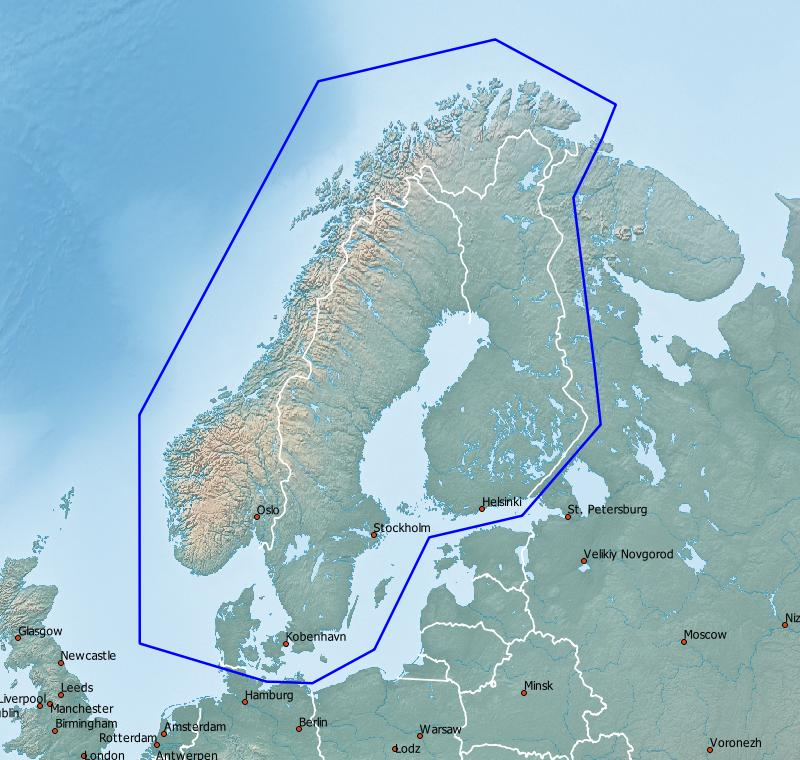
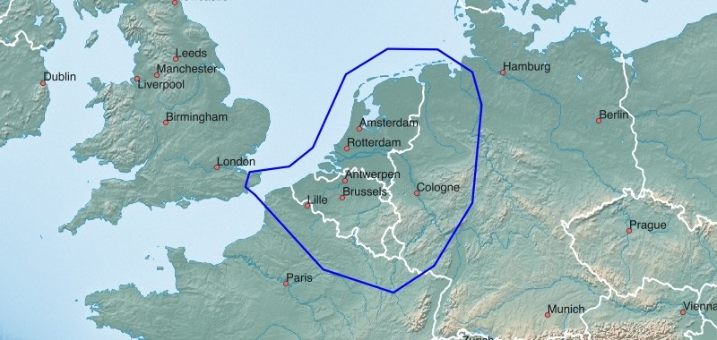
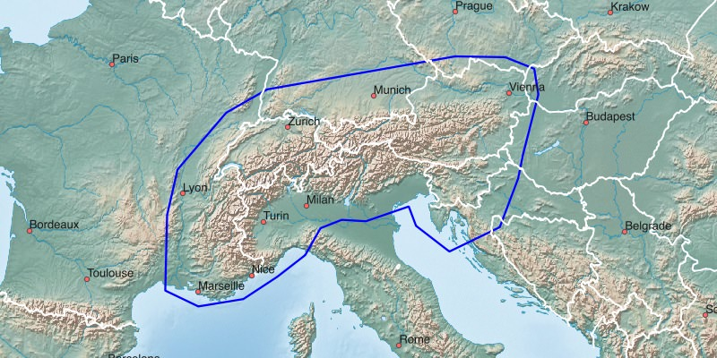
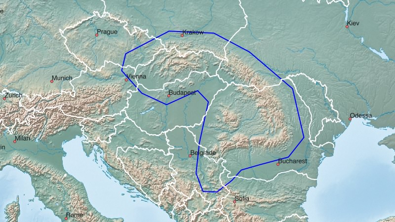

Dänemark (DNK), Norwegen (NOR), Schweden (SWE), Finnland (FIN) [Skandinavische Staaten] Russische Exklave Kaliningrad, Litauen (LTU), Lettland (LVA), Estland (EST) [Baltische Staaten]
Englisch
Garmin GPS-Gerät: (1.8 GB)Skandinavische & Baltische Staaten - Installationsimage für Micro-SD-Karte
Microsoft Windows: (1.8 GB)
Apple Mac OS X: (1.8 GB)
Microsoft Windows: (1.2 GB)
Apple Mac OS X: (1.2 GB)
Microsoft Windows: (1.0 GB)
Apple Mac OS X: (1.0 GB)

Microsoft Windows: (1.0 GB)
Apple Mac OS X: (1.0 GB)

Microsoft Windows: (1.8 GB)
Apple Mac OS X: (1.8 GB)
Microsoft Windows: (1.8 GB)
Apple Mac OS X: (1.8 GB)
Microsoft Windows: (243 MB)
Apple Mac OS X: (243 MB)

Microsoft Windows: (556 MB)
Apple Mac OS X: (556 MB)
Microsoft Windows: (556 MB)
Apple Mac OS X: (556 MB)
Microsoft Windows: (1.1 GB)
Apple Mac OS X: (1.1 GB)
Viel Freude an den Freizeitkarten ... und viele interessante Touren damit.
Skandinavische & Baltische Staaten - GMAP Installationsarchiv (komplett) für Garmin BaseCamp
Skandinavische & Baltische Staaten - GMAP Archiv für Garmin BaseCamp

Vereinigtes Königreich Großbritannien und Nordirland (GBR), Irland (IRL), Färöer (FRO)
Englisch
Garmin GPS-Gerät: (1.2 GB)
Grossbritannien & Irland - Installationsimage für Micro-SD-Karte
Grossbritannien & Irland - GMAP Installationsarchiv (komplett) für Garmin BaseCamp
Grossbritannien & Irland - GMAP Archiv für Garmin BaseCamp

Spanien (ESP), Portugal (PRT) [Iberische Halbinsel, Pyrenäen, Balearen]
Englisch
Garmin GPS-Gerät: (1.0 GB)
Spanien & Portugal - Installationsimage für Micro-SD-Karte
Spanien & Portugal - GMAP Installationsarchiv (komplett) für Garmin BaseCamp
Spanien & Portugal - GMAP Archiv für Garmin BaseCamp
Belgien (BEL), Niederlande (NLD), Luxembourg (LUX) [BeNeLux-Staaten]
Englisch
Garmin GPS-Gerät: (1.0 GB)
BeNeLux-Staaten - Installationsimage für Micro-SD-Karte
BeNeLux-Staaten - GMAP Installationsarchiv (komplett) für Garmin BaseCamp
BeNeLux-Staaten - GMAP Archiv für Garmin BaseCamp
Alpen [Schweiz (CHE), Österreich (AUT), Slowenien (SVN)]
Deutsch
Garmin GPS-Gerät: (1.8 GB)
Alpen - Installationsimage für Micro-SD-Karte
Alpen - GMAP Installationsarchiv (komplett) für Garmin BaseCamp
Alpen - GMAP Archiv für Garmin BaseCamp
Englisch
Garmin GPS-Gerät: (1.8 GB)
Alpen - Installationsimage für Micro-SD-Karte
Alpen - GMAP Installationsarchiv (komplett) für Garmin BaseCamp
Alpen - GMAP Archiv für Garmin BaseCamp

Pyrenäen
Englisch
Garmin GPS-Gerät: (243 MB)
Pyrenäen - Installationsimage für Micro-SD-Karte
Pyrenäen - GMAP Installationsarchiv (komplett) für Garmin BaseCamp
Pyrenäen - GMAP Archiv für Garmin BaseCamp
Karpaten
Englisch
Garmin GPS-Gerät: (556 MB)
Karpaten - Installationsimage für Micro-SD-Karte
Karpaten - GMAP Installationsarchiv (komplett) für Garmin BaseCamp
Karpaten - GMAP Archiv für Garmin BaseCamp
Polnisch
Garmin GPS-Gerät: (556 MB)
Karpaten - Installationsimage für Micro-SD-Karte
Karpaten - GMAP Installationsarchiv (komplett) für Garmin BaseCamp
Karpaten - GMAP Archiv für Garmin BaseCamp

Balkan
Englisch
Garmin GPS-Gerät: (1.1 GB)
Balkan - Installationsimage für Micro-SD-Karte
Balkan - GMAP Installationsarchiv (komplett) für Garmin BaseCamp
Balkan - GMAP Archiv für Garmin BaseCamp